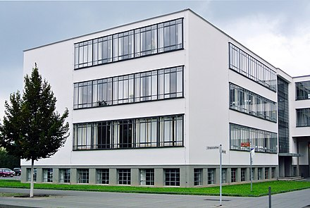

Ruinen |
Neubauten |
Kontakt
|
Impressum
|
Stahl, Beton und Glas
„eisenbetongerippe mit ziegelmauerwerk. steineisendecken auf unterzügen, … sämtliche fenster aus doppelt überfälzten profileisen mit kristallspiegelglas … außenhaut zementputz mit keimscher mineralfarbe“ (WALTER GROPIUS, 1926)
Farbe als Material
Die Farbgebung wurde als ein wichtiger Bestandteil der Gebäudekonzeption in der Werkstatt Wandmalerei von Hinnerk Scheper entwickelt. Sie dient der Orientierung im Gebäude, betont die Gliederung der Architektur bzw. setzt sich an anderen Stellen darüber hinweg und lässt eigene Farbräume entstehen. Unterstützt wird die Farbwirkung durch die unterschiedliche Materialität und Struktur der Oberflächen.
Die Farbgebung, die aktuell im Bauhausgebäude zu sehen ist, entspricht weitestgehend dem historischen Entwurf. Grundlage für die Rekonstruktion bilden intensiven Untersuchungen von Farben und Oberflächen, die die Stiftung Bauhaus Dessau zwischen 1996 und 2006 durchführte.
Bauhausgebäude Dessau
Bauhausgebäude
Werkstättenflügel
von Südosten

Kunstgewerbe- und Handwerkerschule
von Südwesten
Atelierbau
von Osten
Zwischentrakt
von Norden
{kind=link}
{kind=link}
{kind=link}
{kind=link}
{kind=link}